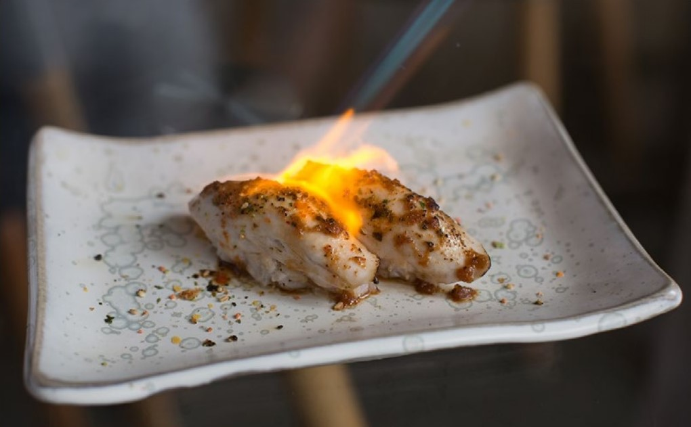
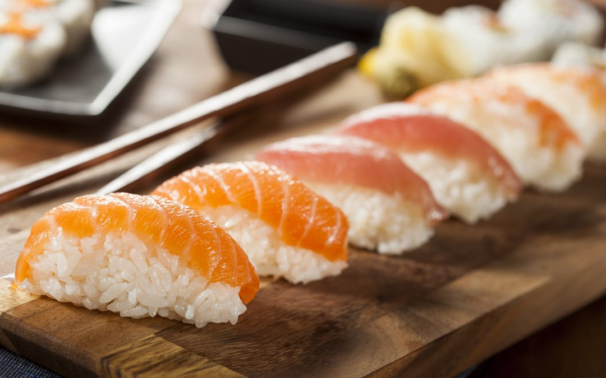
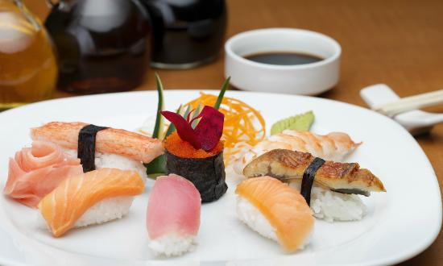

SALMÓN BARRIGA ABURI
Panza de salmón o pesca del día al fuego en salsa de ajo y matequilla al limón.
SALSA AGRIDULCE
- En una sartén colque fondo de pescado, salsa de soja, hondashi y azucar.
- Mezcle ien ydeje reducir hasta que todo quede bien disuelto
PIEL DE SALMÓN CARAMELIZADA
- Corte la cabeza del salmon. Retire la penca y luego quite al costillar, retire las espinas conayuda de una pinza. Haga un corte longitudinal para seprar la panza del lomo. Retire la piel con 3 mm de crane. Corte la piel de salmón en rectangulo de 2cm. x 5cm.
- En una sartén con aceite neutro coloque la piel de salmón, del lado de la piel, dore de amboslados.
- Retire el aceite de la sartén.
- Desglace con marin y agregue un poco de slasa.
- Deje reducir durante 40 50 segundos y retire.
- Corte la piel de salmón en 8 rectángulos de 2cm. cada uno.
ARMADO
- Corte el mango verde, retire la piel y corte 8 rectángulos de 1cm x 4cm.
- Corte el alga obi-nori con una tijera en cintas de 1cm de ancho.
- Arme 8 bollitos de arroz de 3cm x 1,5cm de alto x 1 cm de ancho aproximadamente, ayudándose con agua.
- Tome lapiel de salmón, unte con el dedo de wasabi, encima coloque el bolito de arroz y de vuelta y por encima de la piel coloque el mango.
- Ate con una cinta de alga obi-nori.
PRESENTACIÓN
- Acomode 8 piezas de negiri en un plato de 45°.
- Acompañe con wasabi y jengibre. Decore con una hoja baran o una hoja imitación de caña de bambú.
- S/. 12 por unidad -

GUNKAN / TNT
Nigiri en canasta de nori con la variedad de pescado o mariscos del día.
INGREDIENTES
- 250g de arroz de sushi ya cocido.
- 3 hojas de ala nori.
- 2 latas de atun.
- 1 cebolleta y 2cucharas de mayonesa.
- Para acompañar salsa de soja, pasta de wasabi, etc.
CÓMO HACER GUKAN
- Primero haz el condimento. Calienta el vinagre y disuelva la sal y el azucar. Reserva.
- Lava el arroz para sushi hasta que el agua salaga clara. Después ponlo con el agua a remojo drante 10 minutos y ponlo a cocer. Cuando empice a hervir déjalo otros 10 minutos tapado a fuego suave y por últmo déjalo otros 15 minutos si destapar.
- Continuamos posteriormente incorporando al condimento mezcládolo bien y banicando mientras mezclamos para enfriar el arroz cuanto antes. Y ya tendremos nuestro arroz preparado.
- Una vez preparado el arroz, nos humedecemos las manos y cogemos pequeñas porciones y las apretamos con las manos. En una mano ponemos el arroz y con la otra apretamos con dos dedos dando forma alrgada. Tener en cuenta que no sea muy grade ya que debe antrar de un bocado o dos como mucho.
- Cortamos las láminas de nori en 5 o 6 tiras y con ellas envolvemos ca montón. Observarán que queda un hueco por la parte de arriba.
- Ahora pondremos el relleno que haremos mezaclando elatún con la mayonesa y la cebola bien picada, A la mayonesa, si quieren pueden añadirle en lugar de sal, un poco de salsa de soya y vinagre de arroz en lugar de limón. Así tendremos una mayonesa japonesa.
DEGUSTACIÓN
- El sushi gukan es una forma muy original de comer sushi, De hecho no sule verse ni siquiera en los restaurantes especializados en sushi, solo algunos. Así que no tienes excusa de probar y hacerlos en casa.
- S/.9 por unidad-

NIGIRI
Arroz, vinagre de arroz, pesca y mariscos del día.
- S/. 9 por unidad -

NIGIRI MIXTO
Nueve nigiris y tres cortes de hosomaki acompañado con misoshiru de tofu.
- S/.78 por unidad -
